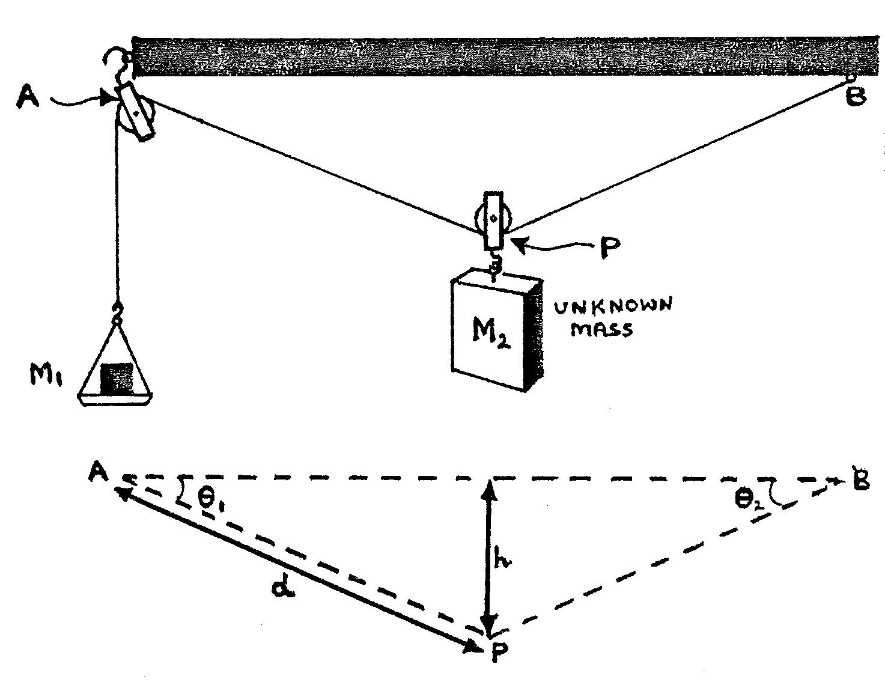
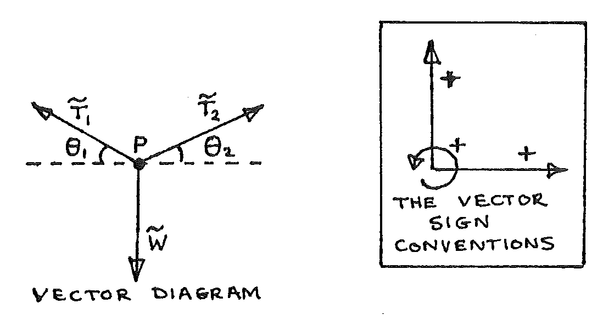

B1-2: Tension in a String: Find an Unknown Mass Using Equilibrium of Forces Theory.¶
Apparatus¶

Wooden rod about 1m long with eyelets as shown; about 1.7m good-quality cord; 2 single pulleys; 2 x 50g masses; 5 x 100g masses; scale pan; unknown mass; 2 clamps & stands; 2 G-clamps; triple beam balance; metre ruler; 1 sheet graph paper; spirit level.
Procedure¶
- Clamp the wooden rod firmly and horizontally, so that there is space for the scale pan and unknown mass to move a large distance vertically without touching any object. Assemble the apparatus as above, placing \(m\) = 200g in the scale pan. Measure and record \(AB\).
- Move \(m_1\) up and down, finally placing it in the middle of the range of possible equilibrium positions. Ensure that pulley \(P\) is directly under the mid-way mark on the rod. Measure and record values of \(m_1\) , \(h\), and \(d\).
- Repeat 2. with \(m_1\) = 250g, 300g, 350g, 400g, 500g, 600g, each time recording \(m_1\), \(h\), and \(d\). Check that the pulley \(P\) remains under the mid-way mark on the rod.
Theory¶

Since point P is in equilibrium (Newton’s 1st law):
Therefore horizontally:
However, \(\theta_1 = \theta_2\) (observation), therefore:
And vertically:
but \(\theta_1 = \theta_2\) and \(T_1 = T_2\), so:
but \(T_1 = m_1g\) , \(\sin\theta_1 = \frac{h}{d}\) , and \(W = m_2g\), hence:
Analysis¶
Plot a graph of \(\frac{h}{d}\) against \(\frac{1}{m_1}\), and find the gradient.
Use only the gradient and the formula given at the end of the theory to calculate the unknown mass \(m_2\).
Measure the mass of \(m_2\): on the beam balance, and assuming this is accurate, calculate the % error in the value obtained in 2. above.
Use the value of \(\frac{h}{d}\) when \(m_1 = 400g\), to calculate \(\theta_1\) at this point. Calculate \(W = m_2 g\).
\(m_1\) is suddenly increased to \(500g\).
Assuming that at this moment \(\theta_1 = \theta_2 = \text{the value from a.}\), find the initial upward acceleration of \(m_2\), as it heads towards a new equilibrium position.
(Hint: find \(T_1\) and use part of equation 1 to find the net upward force on \(m_2\) .)